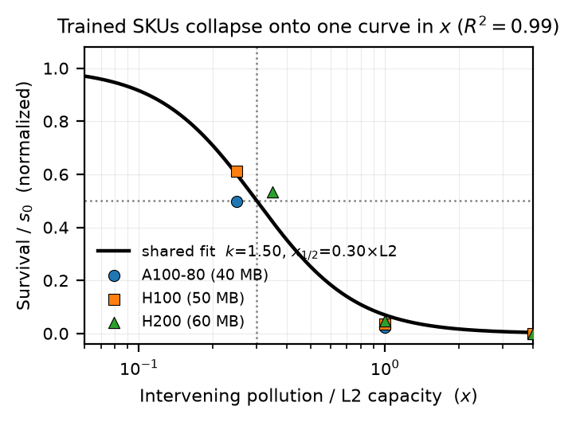
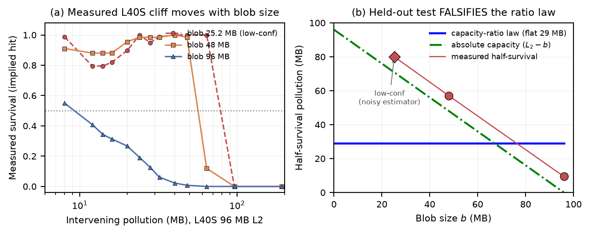

A prior measurement study found that dirty data left in a GPU's L2 cache survives an intervening burst of traffic up to a sharp cliff. This work fits that cliff with a closed-form law — half the data is gone once the intervening traffic reaches 0.30× the cache size — and then asks the honest question: does that law predict a GPU it was never fit on? We pre-registered the prediction, ran the held-out L40S, and report a clean falsification.
Before any result, it is worth establishing why a closed-form L2-residency law is tempting to write, why getting it wrong would quietly cost a real serving system, and why three similar GPUs cannot, by themselves, settle whether such a law is even portable. The six points below build that case in order — what changed in the hardware, what the failure looks like at trace granularity, how badly the status-quo prediction misses, the obvious fix and why it also fails, the structural obstacle that defeats the trained data, and where this sits among prior work — so that the contributions summarized afterward read as answers to a stated problem rather than claims in a vacuum.
GPU L2 caches have grown sharply, from 6 MB on a V100 to 40 MB on an A100, 50 MB on an H100, and 96 MB on an L40S, and a growing line of 2024–2025 systems work treats this on-chip capacity as a resource to schedule around: KV-cache prefetching into L2, learned L2 residency, and priority-aware control of inter-kernel L2 traffic. Each of these implicitly assumes a residency heuristic measured on one GPU carries over to the next. The prior deepdive in this series measured the underlying effect and found the free reuse worth under two-thirds of one percent of a step — small, but real enough that a scheduler might still want to protect it. The open question this work answers is whether the law that governs that reuse is portable across GPUs at all, because if it is not, every heuristic built on it inherits a silent failure when the hardware changes.
Consider a scheduler that learned, on an H100 with 50 MB of L2, that a 25.2 MB activation blob stays half-resident until roughly 0.30 × 50 ≈ 15 MB of intervening traffic, and therefore keeps that blob pinned whenever the next kernel will issue fewer than ~15 MB of competing reads. Port that same rule to an L40S with 96 MB of L2, and the ratio law says the blob now survives to 0.30 × 96 ≈ 28.9 MB. The measurement says otherwise: for the 96 MB-blob case the blob is already half-gone by 9.4 MB of pollution — barely a third of the predicted budget — so the scheduler would protect a blob that is in fact already evicted, wasting the carveout it reserved and mispredicting latency on every step that relied on the reuse. A blob-independent fraction, carried across a cache-size change, is wrong by a factor of three in exactly the regime the new hardware introduces.
The status-quo number a portable ratio law would hand a practitioner is a single 28.9 MB half-survival budget for the L40S, independent of blob size. Measured against the held-out data, that single prediction carries a root-mean-square error of 35.5 MB and per-blob residuals of about −19, +28, and +51 MB across the 96, 48, and 25.2 MB blobs. An error that large is not a calibration nuisance; it is the prediction being wrong in kind, because the measured half-survival pressure is not a constant at all but a quantity that swings from 9.4 to about 80 MB as the blob shrinks.
The obvious alternative is to drop the ratio and fix the cliff at a constant number of intervening megabytes — an absolute-byte budget. Averaging the trained GPUs' half-pressures gives such a null at 15.1 MB. This straw null fails for the same structural reason the ratio law does: it is still blob-independent, predicting one number for every blob, so it too cannot express a half-survival pressure that moves with blob size. Naming it matters precisely because the held-out data reject both blob-independent stories at once, which is what points toward a blob-aware reading rather than either constant.
The deeper reason a clean in-distribution fit proves so little is a near-degeneracy baked into the training data. All three trained GPUs were measured with the same 25.2 MB reference blob, which is 42 to 63% of their 40-to-60 MB caches — a roughly constant fraction. In that narrow band a capacity-ratio law (cliff at a fixed fraction of cache) and an absolute-capacity reading (cliff when the blob plus the pollution exhausts the cache) make almost identical predictions, because the blob occupies nearly the same share of every cache. No amount of curve-fitting on those three GPUs can separate the two mechanisms; the design must reach for a GPU where the blob occupies a very different fraction of the cache. That is the structural constraint the whole experiment is built to overcome, and it is why the work refers back to it when justifying the held-out L40S.
Four immediate lines of work set the stage, and each leaves the portability question open. The prior L2-handoff study (Deepdive #2) measured the survival cliff but deliberately fit no functional form, leaving the law unwritten. L2-residency systems — KV-cache prefetching into L2 and learned-residency controllers — schedule around the effect but assume rather than test cross-GPU portability. Way-partitioning and cache-QoS work (such as set-aside L2 carveouts) motivate the capacity-ratio shape but are not validated as a blob-independent law on shipping silicon. And held-out validation as a method, standard in machine learning, is rarely applied to a hardware-performance heuristic. This work occupies that gap: it writes the closed form the first study declined to, then applies held-out validation to test the portability the systems work assumes — and reports a falsification rather than a confirmation.
A previous deepdive in this series measured how long “dirty” activation data lingers in a GPU's on-chip L2 cache after a compute step, and found a survival cliff: the data holds until an intervening burst of memory traffic pushes it out. The natural next step is to give that cliff a formula. This work fits a capacity-ratio law in which the cliff is set by the burst measured as a fraction of the cache size, calibrated on three datacenter GPUs whose L2 spans 40 to 60 MB. The law fits those three with R² = 0.99 and places the half-survival point at 0.30× the cache. The real test, though, is whether the same fraction predicts a fourth GPU, the L40S, with a much larger 96 MB L2 that the fit never saw. It does not.
On A100-80, H100, and H200, normalizing the survival cliff by the cache size collapses all three onto a single curve, half-survival at 0.30× L2, fit with R² = 0.99. This is a parsimonious in-distribution description — but, honestly, the fit is to anchors reconstructed from the prior paper's reported numbers, not to a dense raw series, so the high R² measures how well one shape absorbs those anchors, not a validated mechanism.
The ratio law predicts one half-survival pressure, 28.9 MB, for every blob on the L40S. The measurement instead shows the half-survival pressure moving strongly with blob size: about 9.4 MB for a 96 MB blob, 57 MB for a 48 MB blob, and roughly 80 MB for a 25.2 MB blob — a swing of about 70 MB the law cannot express. The blob-independent ratio law is falsified.
The three L40S points line up with an absolute-capacity form, half-survival at about (L − b) + 9.3 MB, as if a blob is half-evicted once the intervening traffic plus the blob's own footprint nearly fills the cache. But this is a 3-point, 2-parameter fit with a single residual degree of freedom and one noisy point — a description of this one SKU, not a validated law. More tellingly, the same form does not even fit the three trained anchors.
Neither law transfers cleanly across all four SKUs: the ratio law fits the trained band but breaks on L40S, and the absolute-capacity form fits L40S but not the trained band. The trained range left the two near-degenerate because the reference blob filled a roughly constant fraction of each cache; only a SKU with a very different blob-to-cache ratio could tell them apart, and that is exactly what the L40S provided.
This page is the plain-language companion to the measurement study that this work directly extends. Read Deepdive #2, “Worth the Bytes?” — the prior study that first measured the L2 survival cliff.
No GPU background is assumed. This section builds the five ideas the rest of the page depends on, in order: what the L2 cache holds between steps, what the survival cliff is, what a capacity-ratio law would mean, why the prior study stopped short of writing one, and what it would take to actually trust such a law. Each idea builds on the previous one.
A GPU has a small, fast on-chip cache called the L2, between 40 and 96 MB on the GPUs studied here, sitting in front of the much larger but much slower main memory (HBM or GDDR). When a model finishes one computation, the intermediate activation it produced — call it a dirty blob, because it has not yet been written back — is briefly still resident in L2. If the very next computation reads that same data, it can be served from L2 instead of re-fetched from main memory, which is several times faster. The prior study in this series measured how often that free reuse actually happens, and found it is usually small but real, governed by how long the blob survives before something else displaces it.
The prior study did not find a gentle decay; it found a cliff. As an intervening burst of other memory traffic — the pollution — grows, the dirty blob holds at near-full survival, then drops to near-zero over a narrow range, rather than fading smoothly. Survival is reported as an implied-hit fraction, a residency proxy read from how the blob's later read latency compares to a clean hit and a clean miss. The instructive quantity is the half-survival point: how much intervening traffic is needed before half the blob is gone. On the three datacenter GPUs the prior study described, half-survival landed somewhere in a band of 0.25 to 0.5 times the cache size, and survival was essentially zero once the pollution reached one full cache.
The cleanest possible story is that the cliff depends only on the ratio of the intervening traffic to the cache size, not on the absolute number of megabytes. Under that capacity-ratio law, the same fraction governs every GPU: divide the pollution by the cache size and every SKU's cliff lands at the same place. This is the behavior a simple way-partitioned cache might exhibit, and it is attractive because it gives a single number a practitioner can carry to any new GPU. The model written here states the cliff as a logistic curve in the log of that ratio.
Here $p$ is the intervening pollution, $L$ is the cache size, $s_0$ is the survival at zero pollution, $k$ is the sharpness of the cliff, and $x_{1/2}$ is the half-survival ratio — the value of $p/L$ at which survival has fallen to half. The portability hypothesis is that $k$ and $x_{1/2}$ are shared across GPUs: one shape, relocated along the traffic axis only by each GPU's cache size $L$.
The prior study deliberately reported the cliff as an empirical curve and fit no functional form, writing only that it observed a threshold rather than a decay. That restraint is the seam this work picks up: the contribution here is to add the parametric law the prior paper declined to write, and then to subject it to the test the prior paper could not run — a held-out GPU. The honest danger, flagged from the outset, is that fitting a clean curve to three similar GPUs proves very little if those three GPUs cannot, by themselves, distinguish the ratio story from a competing one.
A law that merely fits its own training data is not portable; portability is the claim that it predicts a case it never saw. The discipline this work adopts is to pre-register a falsifiable prediction before running the held-out GPU, and to commit in advance to reporting a break if the measurement lands away from the prediction. The competing hypothesis is an absolute-capacity reading, in which what matters is whether the blob's own footprint plus the intervening traffic exhausts the cache in megabytes — a story that, on the trained GPUs alone, is nearly indistinguishable from the ratio story, because there the blob occupied a roughly constant fraction of every cache.
The method has three honest moves: fit the shared cliff shape only on the three trained GPUs and to nothing else, pre-register a single falsifiable prediction for the held-out L40S, then run the L40S survival campaign and read the per-blob half-survival pressures off the measured curves. The design is built so the prediction can be wrong, and so a wrong prediction is visible.
The fit consumes only frozen artifacts from the prior campaign: the per-GPU cliff points, the zero-pollution survival, and the datasheet L2 sizes of 40, 50, 60, and 96 MB for A100-80, H100, H200, and L40S. Each GPU contributes its survival-versus-ratio points, the curve is normalized by that GPU's own zero-pollution survival so only the shape remains, and a single sharpness $k$ and half-survival ratio $x_{1/2}$ are fit jointly across all three by least squares. No L40S point enters the fit; the L40S cache size is used only to predict. The honesty caveat the page repeats is that of the twelve anchor points, only the H100 cliff is reported point-wise in the prior paper — the A100-80 and H200 anchors are reconstructed from its stated 0.25-to-0.5× half-survival band. So the R² = 0.99 measures how well one shape absorbs reconstructed anchors, not how well it survives raw data.
Because the half-survival ratio is shared in units of cache size, the ratio law predicts the L40S cliff from its 96 MB cache with no free parameters: half-survival at 0.30 × 96 ≈ 28.9 MB of intervening traffic, regardless of blob size, and near-zero survival once pollution passes one full cache at 96 MB. This 28.9 MB prediction was registered as the held-out test before the L40S ran, with an advance commitment to report a gradient break if the measurement landed away from it. The contrast is against a deliberately simple absolute-byte straw null at 15.1 MB; the two predictions are distinct enough that the measurement can clearly favor one, both, or neither.
The transfer test reuses the prior study's producer-to-polluter-to-consumer survival instrument, retargeted to the L40S. It sweeps intervening pollution across fourteen levels for three blob sizes of 25.2, 48, and 96 MB, with twenty timing envelopes per cell, in both an unprotected baseline and a protected arm. Survival per cell is the same timing-implied hit fraction the prior instrument used. The job ran on a single NVIDIA L40S (compute capability 8.9, 96 MB L2, GDDR6, CUDA 12.6) under the paid account, dispatched through the project's Slurm-submit path rather than raw sbatch, and emits a metadata sidecar — GPU, compute capability, clocks, CUDA and PyTorch versions, timestamp — for reproducibility. One honest limit is flagged here too: the implied-hit estimator is reliable when the blob is comparable to the cache, but noisy when the blob is a small fraction of it, so the 25.2 MB blob (26% of the 96 MB cache) is marked low-confidence in advance.
The results come in two parts. In-distribution, the three trained GPUs collapse onto one cliff. Out-of-distribution, the held-out L40S refuses to follow the prediction that collapse implied. The first figure shows the clean in-distribution fit; the second shows the falsification.
When each trained GPU's survival cliff is normalized by its zero-pollution level and plotted against pollution divided by cache size, the three GPUs — spanning 40, 50, and 60 MB of cache across two architectures — fall onto one curve. The shared logistic shape explains the normalized data with R² = 0.99 and a residual RMSE of 0.048 across twelve cliff points, with the half-survival ratio pinned at 0.30× the cache and the cliff sharpness at k = 1.50 ± 0.24. The figure below shows that collapse. It is a clean, parsimonious in-distribution description — with the caveat, repeated here, that the A100-80 and H200 points are reconstructed from the prior paper's stated band rather than a raw series.

In-distribution fit. The frozen survival cliffs of A100-80 (40 MB), H100 (50 MB) and H200 (60 MB), normalized by zero-pollution survival and plotted against pollution ÷ L2 capacity, collapse onto one fitted logistic shape (k = 1.50, half-survival at 0.30× L2; R² = 0.99). This describes the three trained GPUs well; the held-out L40S, shown next, breaks the prediction it implies.
The ratio law predicts a single, blob-independent half-survival pressure of 28.9 MB on the L40S. The measurement instead shows a half-survival pressure that moves strongly with blob size: about 9.4 MB for a 96 MB blob, about 57 MB for a 48 MB blob, and roughly 80 MB for a 25.2 MB blob — a swing of about 70 MB where the ratio law permits none. The table below reports each measured half-survival pressure against the two pre-specified laws; the residuals against the flat 28.9 MB prediction are far outside any plausible measurement uncertainty. On a narrow screen the table scrolls sideways to show all five columns.
| Blob b (MB) | Measured half-survival | Ratio law | Abs. capacity (L − b) | Confidence |
|---|---|---|---|---|
| 25.2 | ≈80 | 28.9 | 70.8 | low |
| 48.0 | ≈57 | 28.9 | 48.0 | clean |
| 96.0 | ≈9.4 | 28.9 | 0.0 | cleanest |
Ratio-law RMSE vs measured = 35.5 MB. The 96 MB blob is the load-bearing falsifier: a monotone implied-hit curve crossing 0.5 at 9.4 MB, against a 28.9 MB prediction. The 25.2 MB row is low-confidence (noisy estimator) but its survival well past 28.9 MB is unambiguous.
The figure below puts the two panels side by side. Panel (a) shows the raw survival curves: as the blob shrinks, its cliff slides to the right toward more pollution, which a blob-independent ratio law cannot produce. Panel (b) plots the measured half-survival pressure against blob size: the ratio law is a flat horizontal line at 28.9 MB, but the three red measurements descend with blob size, tracking the sloped absolute-capacity line instead.

Held-out L40S falsification. (a) Measured survival (implied hit) vs intervening pollution for three blob sizes; the cliff location moves with blob size, which a blob-independent ratio law cannot produce (the 25.2 MB curve is dashed to flag its noisy estimator). (b) Measured half-survival pollution vs blob size against the two competing laws: the capacity-ratio prediction is a flat ≈29 MB (blue), but the measurements (red) are consistent with the absolute-capacity form ≈ (L₂ − b) + 9.3 (green) — a 3-point, 1-DOF description, not a validated law.
The bar chart below makes the gap concrete: the ratio law's single prediction is the blue reference marker at 28.9 MB on every row, while the measured half-survival pressures fan out from 9.4 to about 80 MB as the blob shrinks. The flat prediction sits in the middle of a range it was never able to span.
Measured per-blob half-survival pressure (bars, ÷80 MB full scale) vs the ratio law's single flat prediction (the blue marker at 28.9 MB on every row, and the bottom bar). A blob-independent law cannot fan out across this range; the measured values move monotonically with blob size.
Not all three blobs carry equal weight, and the page is explicit about which one does. The 96 MB-blob curve is the cleanest evidence: its implied-hit falls monotonically from 1.0 to 0 and crosses 0.5 between 8 and 12 MB of pollution, interpolated at 9.4 MB — barely a third of the 28.9 MB the ratio law predicted. The 48 MB-blob curve is also clean, collapsing sharply between 48 and 64 MB. The 25.2 MB-blob half-pressure of about 80 MB is low-confidence, because at this small blob-to-cache ratio the implied-hit estimator oscillates between 0.79 and 1.0 before the cliff, so its exact crossing is uncertain — but its survival well past 28.9 MB is unambiguous and is by itself enough to reject the flat ratio prediction. The two reliable blobs, above all the clean monotone 96 MB cliff, are what carry the falsification.
Across the three L40S blobs the measured half-survival pressures line up with an absolute-capacity form: a least-squares fit gives half-survival at about (L − b) + 9.3 MB, with a nominal slope of 1.0. In words, on this one held-out GPU a blob appears half-evicted when the intervening pollution plus the blob's own footprint approximately fills the 96 MB cache. This is honestly reported as consistent-with, not proven: it is a fit on three blob points with two parameters, leaving a single residual degree of freedom, and one of the three points is low-confidence. A near-perfect R² on one residual degree of freedom is descriptive of this SKU, not a validated cross-GPU law. And the same (L − b) form does not even fit the three trained anchors — there it would predict half-fractions of 0.37, 0.50, and 0.58× the cache, whereas the trained data sit near 0.30×. So neither law transfers cleanly across all four GPUs: the ratio law fits the trained band but breaks on L40S, and the absolute-capacity form fits L40S but not the trained band.
One question this work cannot yet answer is whether the protected residency rides on a hardware way-partition or on something simpler. A set-conflict probe — sweeping a conflict-set size at line granularity, with a byte-true cross-check — is the experiment that would tell those apart. It is presented as a pre-registered protocol only, because it needs a conflict-set aliasing kernel that does not exist in the current tooling. No probe number appears anywhere in this work; the page reports it as designed future work, with no fabricated data. The L40S falsification reframes what that probe must explain: the absolute-capacity behavior measured here is what a plain capacity-bound cache produces and does not by itself require a way partition, so the probe's value is now to test whether the protected arm, not the unprotected cliff, rides on a partition.
The practical reading divides into a reuse rule and a recalibration rule, and the boundary between them is the contribution. A residency heuristic calibrated on similar-cache GPUs is safe to reuse only within the same blob-to-cache regime; the moment a new GPU has a much larger cache relative to the blob, the fraction must be re-measured rather than assumed.
On GPUs whose cache is a comparable multiple of the blob — the 40-to-60 MB datacenter band measured here — the half-survival cliff sits near 0.30× the cache, and a scheduler can budget reuse around that number. Within this regime the ratio and absolute-capacity readings nearly coincide, so the fraction is a serviceable rule of thumb.
On the L40S, where the same blob is only 26% of the much larger 96 MB cache, the 0.30× fraction is wrong by a factor of three for the cleanest blob. The half-survival pressure tracks how much free cache remains after the blob, not a fixed fraction. A practitioner moving a residency heuristic to a markedly different cache size should budget one re-measurement and should not carry the trained fraction across.
This deepdive directly extends the prior measurement study that first characterized the L2 survival cliff. Where that work measured how much free reuse exists and showed it is small but real, this one asks whether the cliff that governs it obeys a portable law — and reports that the cleanest candidate law does not transfer past the cache regime it was fit on. Read Deepdive #2: Worth the Bytes? The Free Cache Reuse Hiding in LLM Inference.
The claims are deliberately scoped. Each item names a specific way the result could be over-read and the precise scope that remains valid.
The conclusions hold for the four single-GPU SKUs A100-80, H100, H200, and L40S, with the residency cliff measured via the timing-implied hit proxy under the prior study's survival instrument. The headline is a bounded-transferability statement, not a universal law: the capacity-ratio fraction is a usable heuristic within a similar blob-to-cache regime, and it is falsified the moment a GPU's cache is large relative to the blob — at which point the residency cliff must be re-measured rather than assumed portable.